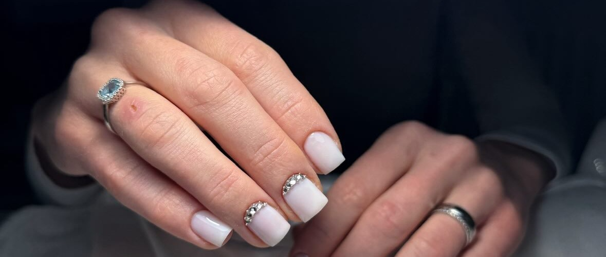

Elegancia, precizitás és
tökéletes harmónia
a körmeidnek.
S, M és L méretű zselés vagy porcelán műkörmök
precíz felhelyezése és rendszeres karbantartása.
Egyedi minták, matricák, strasszkövek, beépített francia és különleges 3D dekorációk.
Hagyományos és erősített technika a tartós, ragyogó színekért, amelyek hetekig hibátlanok maradnak.
Klasszikus körömápolás, gél lakk szakszerű eltávolítása
és a kezek kényeztető felfrissítése.
Válaszd ki a neked megfelelő szabad sávot online rendszerünkben.
Online Időpontfoglalás